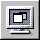

-
Make Project Builder active. A quick way to do this from WebObjects Builder is to choose View Source File from the pull-down list at the bottom of the window.
To build and launch your application, you use buttons in Project Builder's toolbar.
-
Click
 in the toolbar to open the Project Build panel.
in the toolbar to open the Project Build panel.
-
Click in the Project Build panel.
The Project Build panel displays the commands that are being executed to build your project. If all goes well, it displays the status message "Build succeeded."
-
Close the panel.
-
Click in the toolbar to open the Launch panel.
-
Click in the Launch panel to launch your application.
The Launch panel displays a series of messages. If all goes well, you should see messages such as the following, which mean that your application is running successfully.
Your web browser (such as Netscape Navigator or Internet Explorer) should launch automatically and load the correct URL for your application.
-
Test your application by entering information and submitting the form.
If all goes well, your page should look like the one shown at the beginning of this chapter (Creating a Simple WebObjects Application
).